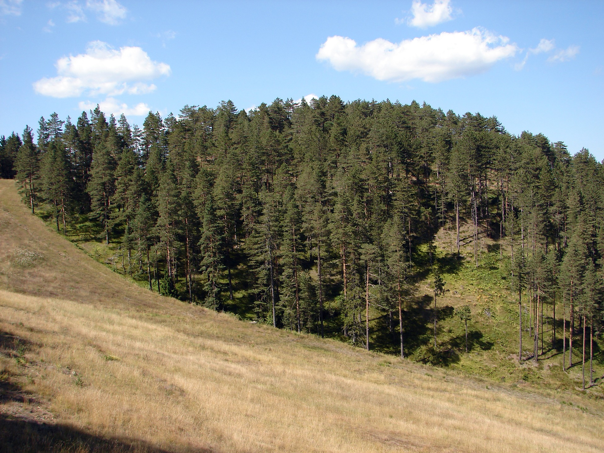
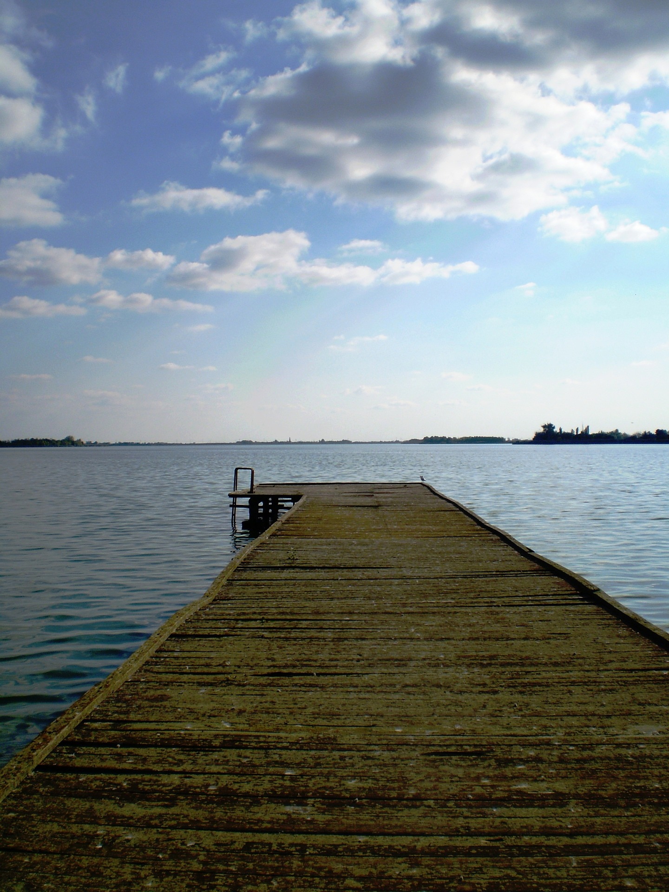

Planina i vazdušna banja Zlatibor, sa najdužom turističkom tradicijom, nalazi se u Zapadnoj Srbiji, 230 km jugo-zapadno od Beograda. Prosečna nadmorska visina je 1000 m. Za ljubitelje skijanja, na 7 km od centra Zlatibora se nalazi ski centar Tornik, najviši vrh ove prelepe planine.
pon-pet 10h - 19h | sub 10h - 14h
Putovanja po Srbiji na više dana
Zlatibor
U ponudi je Vila Mara na Zlatiboru
Tokom cele godine u ponudi imamo Vilu Maru koja raspolaže sa 5 dvokrevetnih i 3 trokrevetne sobe. Nalazi se 300m od centra i jezera. Poseduje WiFi, kablovsku televiziju i interfon.
Cene u tabeli se odnose na bazi najam apartmana dnevno izražene u evrima po apartmanu u različitim periodima tokom cele godine. Autobuski prevoz je moguće rezervisati u našoj agenciji i on iznosi 2000 po osobi (povratna karta).
| 15.12 - 28.02. | 01.03 - 30.04. | 01.05 - 14.06. | 15.06 - 31.08. | 01.09 - 30.09. | 01.10 - 14.12. | |
| Dvokrevetna soba | 30* | 20 | 25** | 30 | 20 | 18 |
| Trokrevetna soba | 40* | 30 | 35** | 40 | 30 | 25 |
* na cenu iz tabele se u periodu od 30.12 do 08.01 dodaje jos 5 evra
** na cenu iz tabele se 01.05 i 02.05 dodaje jos 5 evra

Zlatibor
Zlatibor
Zlatibor
Vila Mara
Program puta i uslovi plaćanja:
Program puta:
Mogućnost doplate za autobuski prevoz. Svakog dana u 08:00 polasci iz Beograda sa BAS-ove stanice. Vožnja Ibarskom magistralom i novoizgrađenom deonicom autoputa do Čačka pa kroz Ovčarsko-kablarsku klisuru do Užica nakon čega sledi uspon prema Zlatiboru. Povratak svakog dana u 15:00 sa Zlatibora, istim putem. Cena povratne karte po osobi je 2000 dinara. Moguće rezervisati karte u našoj agenciji.
Uslovi plaćanja:
Plaćanje je isključivo u dinarskoj protivvrednosti po prodajnom kursu poslovne banke BANCA INTESA za efektivu, na dan uplate.
Celokupan iznos aranžmana do 9 mesečnih rata za korisnike VISA, AMERICAN EXPRESS i MASTER kreditnih kartica INTESA BANKE i VISA, MASTER i DINA kreditnih kartica KOMERCIJALNE BANKE - isključivo u agenciji ConnectTravel, ili 30% od ukupne cene aranžmana prilikom rezervacije, a preostali iznos do pune cene aranžmana gotovinski, platnim karticama najkasnije 21 dan pre početka aranžmana ili u 8 jednakih mesečnih rata - čekovima građana (deponuju se prilikom rezervacije), bez kamate ili kompletan iznos kreditima kod poslovnih banaka, a na osnovu profakture koja mora biti realizovana u roku od 7 dana od dana izdavanja, a najkasnije 21 dan pre početka aranžmana. U slučaju značajnih poremećaja na monetarnom tržištu, cena aranžmana podleže promeni.
NAPOMENA! Nije uključeno u cenu:
Individualni troškovi i usluge koje nisu predviđene programom.
Jednodnevni izleti po Srbiji:
Grad Subotica i Palićko jezero
Grad Subotica je najseverniji grad Republike Srbije, udaljen oko 10 kilometara od granice sa Republikom Mađarskom. Prostire se duž glavnih evropskih koridora i između dve reke: Dunava i Tise. Izvanredno kulturno nasleđe, bogato ukrašene građevine, multikulturalni duh i evropski šarm su osobine koje čine ovaj grad drugačijim. Subotica je poznata po svojoj opuštenoj atmosferi, dobroj hrani i kvalitetnim vinima. Festivali, događaji, koncerti, živopisan kulturni život tokom cele godine je razlog više da posetite ovaj grad. Povrh toga, Subotica nudi puno zanimljivih mesta za odmor i razonodu, kao i za mnogobrojne aktivnosti oko jezera, na ergelama, salašima, u šumama i lovištima.
Palićko jezero predstavlja jednu od glavnih turističkih destinacija u Vojvodini. Jezero se nalazi na severu Srbije na oko 8 kilometara od Subotice. Površina jezera iznosi oko 4.7 kvadratnih kilometara. Dubina jezera varira, ali u proseku iznosi oko 2 metra. Najveća dubina je oko 3 i po metra. Jezero je teoretski podeljeno na četiri sektora i veoma je bogato ribom na radost ribolovaca. Za ribolov je potrebna dozvola. U sezoni temperatura vode iznosi od 18-25°C. čak iako je voda hladna, zbog relativno male dubine, dovoljno je samo par sunčanih toplih dana da se temperatura jezera zagreje. Upotreba motornih čamaca nije dozvoljena. Obala jezera je duga oko 17 km i celom svojom dužinom je uređena.
Tokom cele godine, svake nedelje se organizuju polasci na jednodnevni izlet, subotom, iz Beograda ka Subotici i Paliću.
Cena aranžmana iznosi 2000 dinara po osobi.
Gradska kuća u Subotici
Palićko jezero
Glavni gradski trg u Subotici

Palićko jezero
Program puta i uslovi plaćanja:
Program puta:
Polazak iz Beograda oko 07:00 sa parkinga preko puta Sava Centra. Vožnja preko Novog Sada do Subotice. Odlazak u obilazak grada uz pratnju vodiča (Franjevačka crkva, Gradski muzej, Sinagoga, Gimnazija, Katedrala, Gradska kuća, Spomenik Caru Jovanu Nenadu, Gradska biblioteka, Narodno Pozorište, Rajhl Palata, Srpska pravoslavna crkva.) Slobodno vreme . Nastavak putovanja do Palićkog jezera. Na jezeru možete obići: Vodotoranj, Veliki park, Velika terasa, Muzički paviljon, Spomen česma, Ženski štrand, Statua Lajoša Vermeša, ZOO vrt. Slobodno vreme do popodnevnih časova . Polazak za Beograd. Dolazak na mesto polaska u večernjim časovima.
Uslovi plaćanja:
Mogućnost odloženog plaćanja, plaćanja na rate ili punog iznosa u roku do 2 dana pred realizaciju putovanja. Za više informacija kontaktirajte nas!
Uključeno u cenu:
Prevoz autobusom turističke klase prema programu
Usluge licenciranog turističkog vodiča tokom trajanje ture
Ulaznice prema programu
Troškovi organizacije putovanja
Nije uključeno u cenu:
Obilazak Gradske kuće 200,00 dinara ( deca do 12 godina 100 din)
Ulaznica za ZOO vrt na Paliću
Individualni troškovi i usluge koje nisu predviđene programom.
NAPOMENA!
Za realizovanje putovanja potrebno je minimum 30 prijavljenih putnika. U slučaju nedovoljnog broja prijavljenih putnika, agencija zadržava pravo korekcije cena, izmene programa ili otkaza putovanja najkasnije 3 dana pre početka putovanja. Agencija ne snosi odgovornost za eventualne drugačije usmene informacije o programu putovanja. Organizator zadržava pravo promene redosleda pojedinih sadržaja u programu. Takođe, vremenske prilike mogu uticati na pomeranje/otkazivanje putovanja.
Đerdap
Tamo gde je Dunav najlepši, izgradile su se tvrđave Smederevska i Golubačka koje su bile značajna odbrana za vreme turske okupacije, a i sada stoje ponosno na obalama ove reke. Pored prelepih predela kroz koji prolazi Dunav, opustićemo svoja čula i prepustiti se talasima Dunava, uživajući u prelepom pogledu na Đerdapsku klisuru, najveću klisuru Evrope, još nazivanu i “Gvozdena kapija”.
Tokom cele godine, svake subote se organizuju polasci na jednodnevni izlet iz Beograda ka Đerdapskoj klisuri.
Cena aranžmana iznosi 1500 dinara po osobi.
Kapetan Mišin Breg
Golubačka tvrđava
Lice poslednjeg vladara Dakije, Decebala, isklesano u steni sa rumunske strane
Hidroelektrana i granični prelaz Đerdap 1
Program puta i uslovi plaćanja:
Program puta:
Polazak iz Beograda u 08:30 h sa parkinga prekoputa Sava centra. Vožnja do Smederevske tvrđave koja je građena po uzoru na Carigrad i njegove bedeme. Tvrđavu je podigao despot Srbije Đurađ Branković u XV veku. Obilazak tvrđave, nakon čega sledi polazak prema Donjem Milanovcu. Na putu do tamo, proći ćemo kroz Golubačku tvrđavu koja je sagrađena u XIV veku. Tokom svoje istorije pripadala je Srbima, Mađarima, Turcima i Austrijancima, tj. svima onima koji su vladali ovim prostorima. Dolazak do Donjeg Milanovca, gradića na samoj obali Dunava koji je više puta preseljavan i potapan zbog izgradnje hidroelektrane Đerdap. Poseta Etno kompleksu na Kapetan Mišinom Bregu. Ovde ćete imati priliku da uživate u nesvakidašnjim tradicionalnim vlaškim specijalitetima ovog kraja uz jedan od najlepših pogleda na Dunav i Đerdapsku klisuru. Nakon predaha, povratak za Beograd. Dolazak u kasnim večernjim satima.
Uslovi plaćanja:
Mogućnost odloženog plaćanja, plaćanja na rate ili punog iznosa u roku do 2 dana pred realizaciju putovanja. Za više informacija kontaktirajte nas!
Uključeno u cenu:
Prevoz autobusom turističke klase prema programu
Usluge licenciranog turističkog vodiča tokom trajanje ture
Ulaznice prema programu
Ručak na Kapetan Mišinom Bregu
Troškovi organizacije putovanja
Nije uključeno u cenu:
Piće tokom ručka
Obilazak Smederevske tvrđave koje iznosi 120 dinara
Individualni troškovi i usluge koje nisu predviđene programom.
NAPOMENA!
Za realizovanje putovanja potrebno je minimum 30 prijavljenih putnika. U slučaju nedovoljnog broja prijavljenih putnika, agencija zadržava pravo korekcije cena, izmene programa ili otkaza putovanja najkasnije 3 dana pre početka putovanja. Agencija ne snosi odgovornost za eventualne drugačije usmene informacije o programu putovanja. Organizator zadržava pravo promene redosleda pojedinih sadržaja u programu. Takođe, vremenske prilike mogu uticati na pomeranje/otkazivanje putovanja.